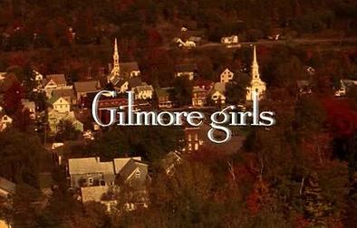

When two children go missing in a small German town, its sinful past is exposed along with the double lives and fractured relationships that exist among four families as they search for the kids. The mystery-drama series introduces an intricate puzzle filled with twists that includes a web of curious characters, all of whom have a connection to the town's troubled history, whether they know it or not. The story includes supernatural elements that tie back to the same town in 1986.
The OA
2016 ‧ Mystery ‧ 2 seasons ‧ Program creators: Brit Marling, Zal Batmanglij
Brit Marling plays the role of Prairie Johnson, a young woman who returns home after a 7-year disappearance. Her sudden return is not the only miraculous occurrence: everyone is shocked to learn that Prairie is no longer blind. While the FBI and her parents are anxious to discuss Prairie's disappearance, she won't talk about what happened during the time that she was missing.
Skam
2015 ‧ Drama ‧ 4 seasons ‧ Julie Andem
The story of young teenagers and pupils on Hartvig Nissens upper secondary school in Oslo, and their troubles, scandals and everyday life. Each season is told from a different person's point of view.
Detective Harry Ambrose investigates various atrocious murder cases and tries to analyse the reasons behind ordinary people committing heinous crimes.
Atypical
2017 ‧ Comedy-drama ‧ 3 seasons ‧ Director: Seth Gordon
This heartfelt comedy follows Sam, a teenager on the autism spectrum, who has decided he is ready for romance. In order to start dating -- and hopefully find love -- Sam will need to be more independent, which also sends his mother on her own life-changing path. She and the rest of Sam's family, including a scrappy sister and a father seeking a better understanding of his son, must adjust to change and explore what it means to be "normal."
Mindhunter
2017 ‧ Crime ‧ 2 seasons ‧ Writers: Joe Penhall, Elizabeth Hannah, Joshua Donen
Catching a criminal often requires the authorities to get inside the villain's mind to figure out how he thinks. That's the job of FBI agents Holden Ford and Bill Tench. They attempt to understand and catch serial killers by studying their damaged psyches. Along the way, the agents pioneer the development of modern serial-killer profiling.
This Is Us
2016 ‧ Drama ‧ 5 seasons ‧ Writers: Dan Fogelman, Kay Oyegun, Aurin Squire, Donald Todd
Kevin, Kate and Randall, three siblings, go through unique personal struggles at different intervals of life as they try to find happiness and get over a tragedy in their past.
Euphoria
2019 ‧ Teen drama ‧ 1 season ‧ Executive producers: Drake, Ron Leshem, Tmira Yardeni
An American adaptation of the Israeli show of the same name, "Euphoria" follows the troubled life of 17-year-old Rue, a drug addict fresh from rehab with no plans to stay clean. Circling in Rue's orbit are Jules, a transgender girl searching for where she belongs; Nate, a jock whose anger issues mask sexual insecurities; Chris, a football star who finds the adjustment from high school to college harder than expected; Cassie, whose sexual history continues to dog her; and Kat, a body-conscious teen exploring her sexuality. As the classmates struggle to make sense of their futures, the series tackles the teenage landscape of substance-enhanced parties and anxiety-ridden day-to-day life with empathy and candor.
Chernobyl
2019 ‧ Historical drama ‧ 1 season ‧ Director: Johan Renck
In April 1986, the city of Chernobyl in the Soviet Union suffers one of the worst nuclear disasters in the history of mankind. Consequently, many heroes put their lives on the line to save Europe.
Gilmore Girl
2000 ‧ Drama ‧ 7 seasons ‧ Writers: Amy Sherman-Palladino, Daniel Palladino, Rebecca Rand Kirshner, John Stephens
Lorelai Gilmore, an independent young woman, shares a close bond with her wilful daughter, Rory. However, her relationship with her own mother is strained. 